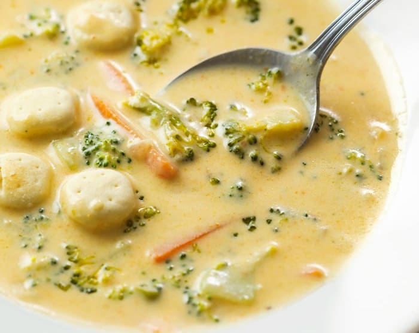

Broccoli Soup

Description
Super creamy and perfect for when the temperature starts to drop.
Ingredients
- 4LBs of Butter
- Fresh Broccoli
- Onion
- Black Pepper
- Chicken Broth
- Heavy Whipping Cream
- Garlid Croutons
Steps
- Melt 4 tablespoons butter in heavy medium pot over medium-high heat. Add broccoli, onion, carrot, salt and pepper and saute until onion is translucent, about 6 minutes. Add the flour and cook for 1 minute, until the flour reaches a blonde color. Add stock and bring to boil.
- Simmer uncovered until broccoli is tender, about 15 minutes. Pour in cream. With an immersion blender, puree the soup. Add salt and pepper, to taste, and then replace the lid back on the pot. Serve hot with Homemade Croutons.